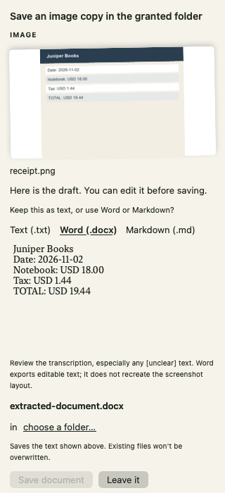

Updated 2026-09-17T05:34:44.954085+00:00
Files, images, documents, calendar and research share planning and tool-result feedback. Errors return to the model for correction.
Goals and pending calls persist. Changed state requires renewed approval. Interrupted writes are held as uncertain, with explicit reconciliation.
Vision evidence feeds the planner. Editable TXT is the default; Word and Markdown reuse the draft. Exports require an exact confirmed proposal.
Step, time and context limits; cancellation; duplicate-write protection; grant revalidation; actual receipts before continuation.
| Category | Result | What this proves |
|---|---|---|
| Loop and recovery | 21/21 | Production orchestration/journal replay, including crashes, storage failure and archived goals |
| Compiled app integration | 17/17 | Actual agent and confirmation handler; temporary files; scripted model/reader |
| Live Pilot 1 | 1 trajectory passed | Two checkpoints: correct preview and confirmed output plus continuation; 22.4s |
| Request/image guards | 20/20 | Argument fidelity and image-boundary rules |
| Filesystem export | 12/12 | No overwrite, grant revocation, ambiguous roots and Undo |
| Document export | 10/10 | TXT/MD byte fidelity, DOCX and reader normalization |
| Calendar / behavior / roadmap | 15/15 · 16/16 · 45/45 | Synthetic provider and existing behavior regressions; not live-provider effects |
| Build and native rendering | Passed | Debug compilation and inspected SwiftUI image-draft render |
This is a native component capture using a fixture image and scripted transcription. It is not evidence of model OCR accuracy or physical drag/drop.

Broad multi-step model reliability, live calendar/provider effects and complete native physical-input flows. The signed Margin Release build is now installed at /Applications/MeetingIntro.app. One instance is running with Pilot 1 selected. The previous app is archived for rollback; master and public releases are unchanged.
Keep Pilot 1 for now. Ornith passed 106/117 versus Pilot 1’s 110/117, and its median latency was 9.2s versus 4.0s. That frozen test used the earlier architecture and did not test Ornith image recognition. Read the final assessment.
Verified 2026-09-17T05:45:20.312609+00:00 · Developer ID signed · Release integration 16/16 passed · native notebook opened. Installation and rollback record · Release verification log
/var/folders/gz/pq0q76xn0dqcbqwhd_fnm77w0000gn/T/margin-loop-c9iosxw8/checks.swift:413:23: warning: expression of type 'MarginToolLoop.End' is unused [#no-usage]
411 | try await MarginToolLoop.run(messages: [], request: { _ in throw CancellationError() }, prepare: { _ in fatalError("must not prepare") }, present: { _ in }, answer: { _ in })
412 | }
413 | do { try await task.value; fatalError("cancel swallowed") } catch is CancellationError { check(true, "cancellation propagates") }
| `- warning: expression of type 'MarginToolLoop.End' is unused [#no-usage]
414 | let directory = FileManager.default.temporaryDirectory.appendingPathComponent(UUID().uuidString)
415 | defer { try? FileManager.default.removeItem(at: directory) }
PASS read -> inspect -> read -> write preview
PASS write never executes without confirmation
PASS both read observations reach next model call
PASS tool error -> corrected arguments -> grounded answer
PASS identical call loop stops
PASS step budget stops changing-call loop
PASS authorization pause blocks later calls and run closure
PASS cancellation propagates
PASS restart preserves unapproved goal and arguments
PASS crash during write becomes uncertain
PASS uncertain write cannot execute again
PASS execution receipt returns to model transcript
PASS execution consumes pending approval
PASS approval binds displayed target
PASS resumes share persistent call budget
PASS corrupt journal fails closed
PASS failed persistence cannot publish executable proposal
PASS human no-effect reconciliation requires new preview
PASS completed operation cannot repeat within same task
PASS starting another goal keeps interrupted task discoverable
PASS archived goal can be restored with its original state
21/21 orchestration checks passed
PASS agent chains read then pauses before write PASS changed destination requires renewed approval PASS confirmation executes once and resumes model with receipt PASS actual exported bytes inspected PASS double confirmation cannot repeat write PASS final response does not masquerade as verified task completion PASS restart rebuilds preview without executing PASS restored task executes only after fresh confirmation PASS concurrent confirmations cannot duplicate in-flight operation PASS stop during execution preserves receipt and prevents continuation PASS image evidence enters shared loop and produces editable TXT draft PASS format follow-up uses tools without repeated OCR PASS image export remains a proposal before confirmation PASS confirmed Word export contains reviewed transcription PASS image task undo moves exported document out of destination PASS grant revocation invalidates approval before image write PASS native SwiftUI image-draft rendering captured 17/17 agent integration checks passed
PASS live Pilot 1: inspect -> evidence -> save proposal; no pre-approval write PASS live Pilot 1: confirm -> actual file -> resumed response MODEL: margin-lora-pilot:final; ELAPSED: 22.35563600063324; TIMESTAMP: 2026-09-17T05:25:51Z user: Inspect the fixture inventory, then save a copy to its preconfigured output. Use the tools and wait for my confirmation before saving. assistant: Fixture inventory One item: diagram note. Contents: Order received -> payment checked -> dispatch. Use save_fixture_copy to save it to the preconfigured temporary output. Proposal only; not confirmed. assistant: Save fixture copy /var/folders/gz/pq0q76xn0dqcbqwhd_fnm77w0000gn/T/margin-live-9370D60D-983B-48B8-B2C8-0499D93858B8/fixture-copy.txt Saved and verified /var/folders/gz/pq0q76xn0dqcbqwhd_fnm77w0000gn/T/margin-live-9370D60D-983B-48B8-B2C8-0499D93858B8/fixture-copy.txt assistant: Saved and verified: /var/folders/gz/pq0q76xn0dqcbqwhd_fnm77w0000gn/T/margin-live-9370D60D-983B-48B8-B2C8-0499D93858B8/fixture-copy.txt.
Request checks passed: 11 Request and image checks passed: 20
Image draft: selected source/answer round-trip, selection/reset invalidation and corrupt snapshot preservation passed
✓ 3pm means today's 15:00, not a title substring or tomorrow ✓ explicit original date selects the later occurrence ✓ same-id recurring occurrences remain separate; cancelled event excluded ✓ ambiguous matches return a question, not a write proposal ✓ blank title never matches everything ✓ past occurrences are excluded ✓ midnight and noon are distinct ✓ invalid clock references are rejected ✓ cancel tool refuses ambiguity before provider access ✓ move tool refuses ambiguity before provider access ✓ invalid original date does not broaden the selection ✓ exact original time works without an invented title ✓ two meetings at the exact same time remain ambiguous ✓ missing both title and original time refuses ✓ opaque Graph IDs cannot change the cancellation endpoint 15/15 calendar guards held ✓ learning starts enabled; conversation archive remains opt-in ✓ disabled memory is absent from model instructions ✓ enabled explicit memory enters instructions ✓ personality, soul and proactivity survive reload ✓ unconfirmed history pages have grey markers ✓ unchanged pages keep their original date ✓ confirmed history pages retain action markers and outcomes ✓ history retains tool details across reload ✓ reopened history has no executable actions ✓ screenshot regression: capabilities after PDF history ✓ capability answer comes from the registered tool ✓ cleared history remains empty after reload ✓ explicit permanent deletion refuses instead of proposing Trash ✓ search text about deletion is not treated as a deletion command ✓ preparing a proposal performs zero writes ✓ simultaneous confirmations execute exactly once 16/16 behavior guards held ✓ quoted third-party evidence cannot become a saved preference ✓ the user's own unquoted preference can still evolve ✓ idle notebook rests after configured timeout ✓ busy and never-rest states stay visible ✓ soul forms automatically from attributed feedback ✓ evolving preference retains previous value ✓ user-edited learning is pinned ✓ forgotten category cannot silently return ✓ unattributed learning is rejected ✓ disabled soul cannot learn ✓ learned soul survives reload ✓ forgetting survives reload ✓ undated event asks before provider access ✓ invalid numeric arguments cannot trap or truncate ✓ simple recording list needs no model ✓ literal transcript search preserves query without model ✓ date-only meeting moves preserve the known local clock time ✓ screenshot holiday request retains all eight events ✓ last requested date survives parsing ✓ full holiday title survives parsing ✓ date-only events explicitly preview all-day ✓ timed lists are not silently converted to all-day ✓ initial activity describes batch scope ✓ invalid eighth event blocks whole batch ✓ duplicate entries rejected ✓ multiple returned event calls are combined, never truncated ✓ all-day interval uses calendar boundaries ✓ event preview includes year ✓ failure stops before following writes ✓ partial completion survives restart without pretending failure is retry-safe ✓ resume skips completed and uncertain steps ✓ human-checked noncreation returns uncertain step to pending ✓ reconciled step resumes without replaying completed siblings ✓ identical completed steps cannot replay through a new job ✓ in-flight write becomes uncertain after restart ✓ pause finishes current step and stops next step ✓ corrupt journals cannot be overwritten ✓ web query cannot be replaced with private prior tool output ✓ Brave credential goes only in API header ✓ search key never enters URL ✓ search result limit enforced ✓ missing Brave key fails before network ✓ search results deduplicate URLs and reject executable links ✓ quota errors are not empty search results ✓ malformed search response fails 45/45 roadmap guards held
00fa09913b459cbbc988d1f6730289ae.sdkstatcache -output-file-map /tmp/margin-image-read-build/Build/Intermediates.noindex/MeetingIntro.build/Debug/MeetingIntro.build/Objects-normal/arm64/MeetingIntro-OutputFileMap.json -use-frontend-parseable-output -save-temps -no-color-diagnostics -explicit-module-build -module-cache-path /tmp/margin-image-read-build/Build/Intermediates.noindex/SwiftExplicitPrecompiledModules -clang-scanner-module-cache-path /tmp/margin-image-read-build/ModuleCache.noindex -sdk-module-cache-path /tmp/margin-image-read-build/ModuleCache.noindex -serialize-diagnostics -emit-dependencies -emit-module -emit-module-path /tmp/margin-image-read-build/Build/Intermediates.noindex/MeetingIntro.build/Debug/MeetingIntro.build/Objects-normal/arm64/MeetingIntro.swiftmodule -validate-clang-modules-once -clang-build-session-file /tmp/margin-image-read-build/ModuleCache.noindex/Session.modulevalidation -Xcc -I/tmp/margin-image-read-build/Build/Intermediates.noindex/MeetingIntro.build/Debug/MeetingIntro.build/swift-overrides.hmap -emit-const-values -Xfrontend -const-gather-protocols-file -Xfrontend /tmp/margin-image-read-build/Build/Intermediates.noindex/MeetingIntro.build/Debug/MeetingIntro.build/Objects-normal/arm64/MeetingIntro_const_extract_protocols.json -Xcc -iquote -Xcc /tmp/margin-image-read-build/Build/Intermediates.noindex/MeetingIntro.build/Debug/MeetingIntro.build/MeetingIntro-generated-files.hmap -Xcc -I/tmp/margin-image-read-build/Build/Intermediates.noindex/MeetingIntro.build/Debug/MeetingIntro.build/MeetingIntro-own-target-headers.hmap -Xcc -I/tmp/margin-image-read-build/Build/Intermediates.noindex/MeetingIntro.build/Debug/MeetingIntro.build/MeetingIntro-all-non-framework-target-headers.hmap -Xcc -ivfsoverlay -Xcc /tmp/margin-image-read-build/Build/Intermediates.noindex/MeetingIntro.build/Debug/MeetingIntro-3178340cafd5296386154e075832d6b4-VFS/all-product-headers.yaml -Xcc -iquote -Xcc /tmp/margin-image-read-build/Build/Intermediates.noindex/MeetingIntro.build/Debug/MeetingIntro.build/MeetingIntro-project-headers.hmap -Xcc -I/tmp/margin-image-read-build/SourcePackages/checkouts/yyjson/src -Xcc -I/tmp/margin-image-read-build/Build/Products/Debug/include -Xcc -I/tmp/margin-image-read-build/Build/Intermediates.noindex/MeetingIntro.build/Debug/MeetingIntro.build/DerivedSources-normal/arm64 -Xcc -I/tmp/margin-image-read-build/Build/Intermediates.noindex/MeetingIntro.build/Debug/MeetingIntro.build/DerivedSources/arm64 -Xcc -I/tmp/margin-image-read-build/Build/Intermediates.noindex/MeetingIntro.build/Debug/MeetingIntro.build/DerivedSources -Xcc -DDEBUG\=1 -emit-objc-header -emit-objc-header-path /tmp/margin-image-read-build/Build/Intermediates.noindex/MeetingIntro.build/Debug/MeetingIntro.build/Objects-normal/arm64/MeetingIntro-Swift.h -working-directory /Users/oluyinkaoginni/Documents/SelfProjects/MeetingIntro -experimental-emit-module-separately -disable-cmo
Copy /tmp/margin-image-read-build/Build/Products/Debug/MeetingIntro.swiftmodule/arm64-apple-macos.swiftmodule /tmp/margin-image-read-build/Build/Intermediates.noindex/MeetingIntro.build/Debug/MeetingIntro.build/Objects-normal/arm64/MeetingIntro.swiftmodule (in target 'MeetingIntro' from project 'MeetingIntro')
cd /Users/oluyinkaoginni/Documents/SelfProjects/MeetingIntro
builtin-copy -exclude .DS_Store -exclude CVS -exclude .svn -exclude .git -exclude .hg -resolve-src-symlinks -rename /tmp/margin-image-read-build/Build/Intermediates.noindex/MeetingIntro.build/Debug/MeetingIntro.build/Objects-normal/arm64/MeetingIntro.swiftmodule /tmp/margin-image-read-build/Build/Products/Debug/MeetingIntro.swiftmodule/arm64-apple-macos.swiftmodule
Copy /tmp/margin-image-read-build/Build/Products/Debug/MeetingIntro.swiftmodule/arm64-apple-macos.abi.json /tmp/margin-image-read-build/Build/Intermediates.noindex/MeetingIntro.build/Debug/MeetingIntro.build/Objects-normal/arm64/MeetingIntro.abi.json (in target 'MeetingIntro' from project 'MeetingIntro')
cd /Users/oluyinkaoginni/Documents/SelfProjects/MeetingIntro
builtin-copy -exclude .DS_Store -exclude CVS -exclude .svn -exclude .git -exclude .hg -resolve-src-symlinks -rename /tmp/margin-image-read-build/Build/Intermediates.noindex/MeetingIntro.build/Debug/MeetingIntro.build/Objects-normal/arm64/MeetingIntro.abi.json /tmp/margin-image-read-build/Build/Products/Debug/MeetingIntro.swiftmodule/arm64-apple-macos.abi.json
Ld /tmp/margin-image-read-build/Build/Products/Debug/MeetingIntro.app/Contents/MacOS/MeetingIntro.debug.dylib normal (in target 'MeetingIntro' from project 'MeetingIntro')
cd /Users/oluyinkaoginni/Documents/SelfProjects/MeetingIntro
/Applications/Xcode.app/Contents/Developer/Toolchains/XcodeDefault.xctoolchain/usr/bin/clang -Xlinker -reproducible -target arm64-apple-macos14.0 -dynamiclib -isysroot /Applications/Xcode.app/Contents/Developer/Platforms/MacOSX.platform/Developer/SDKs/MacOSX26.2.sdk -O0 -L/tmp/margin-image-read-build/Build/Intermediates.noindex/EagerLinkingTBDs/Debug -L/tmp/margin-image-read-build/Build/Products/Debug -F/tmp/margin-image-read-build/Build/Intermediates.noindex/EagerLinkingTBDs/Debug -F/tmp/margin-image-read-build/Build/Products/Debug/PackageFrameworks -F/tmp/margin-image-read-build/Build/Products/Debug/PackageFrameworks -F/tmp/margin-image-read-build/Build/Products/Debug/PackageFrameworks -F/tmp/margin-image-read-build/Build/Products/Debug/PackageFrameworks -F/tmp/margin-image-read-build/Build/Products/Debug/PackageFrameworks -F/tmp/margin-image-read-build/Build/Products/Debug/PackageFrameworks -F/tmp/margin-image-read-build/Build/Products/Debug/PackageFrameworks -F/tmp/margin-image-read-build/Build/Products/Debug/PackageFrameworks -F/tmp/margin-image-read-build/Build/Products/Debug/PackageFrameworks -F/tmp/margin-image-read-build/Build/Products/Debug -filelist /tmp/margin-image-read-build/Build/Intermediates.noindex/MeetingIntro.build/Debug/MeetingIntro.build/Objects-normal/arm64/MeetingIntro.LinkFileList -install_name @rpath/MeetingIntro.debug.dylib -Xlinker -rpath -Xlinker /usr/lib/swift -Xlinker -rpath -Xlinker /tmp/margin-image-read-build/Build/Products/Debug/PackageFrameworks -Xlinker -rpath -Xlinker @executable_path/../Frameworks -Xlinker -object_path_lto -Xlinker /tmp/margin-image-read-build/Build/Intermediates.noindex/MeetingIntro.build/Debug/MeetingIntro.build/Objects-normal/arm64/MeetingIntro_lto.o -rdynamic -Xlinker -no_deduplicate -Xlinker -dependency_info -Xlinker /tmp/margin-image-read-build/Build/Intermediates.noindex/MeetingIntro.build/Debug/MeetingIntro.build/Objects-normal/arm64/MeetingIntro_dependency_info.dat -fobjc-link-runtime -L/Applications/Xcode.app/Contents/Developer/Toolchains/XcodeDefault.xctoolchain/usr/lib/swift/macosx -L/usr/lib/swift -Xlinker -add_ast_path -Xlinker /tmp/margin-image-read-build/Build/Intermediates.noindex/MeetingIntro.build/Debug/MeetingIntro.build/Objects-normal/arm64/MeetingIntro.swiftmodule @/tmp/margin-image-read-build/Build/Intermediates.noindex/MeetingIntro.build/Debug/MeetingIntro.build/Objects-normal/arm64/MeetingIntro-linker-args.resp -Wl,-no_warn_duplicate_libraries -Wl,-no_warn_duplicate_libraries -Wl,-no_warn_duplicate_libraries -Wl,-no_warn_duplicate_libraries -Wl,-no_warn_duplicate_libraries -Wl,-no_warn_duplicate_libraries -Wl,-no_warn_duplicate_libraries -Wl,-no_warn_duplicate_libraries -Wl,-no_warn_duplicate_libraries -Xlinker -alias -Xlinker _main -Xlinker ___debug_main_executable_dylib_entry_point -o /tmp/margin-image-read-build/Build/Products/Debug/MeetingIntro.app/Contents/MacOS/MeetingIntro.debug.dylib -Xlinker -add_ast_path -Xlinker /tmp/margin-image-read-build/Build/Intermediates.noindex/whisperkit.build/Debug/WhisperKit.build/Objects-normal/arm64/WhisperKit.swiftmodule @/tmp/margin-image-read-build/Build/Intermediates.noindex/whisperkit.build/Debug/WhisperKit.build/Objects-normal/arm64/WhisperKit-linker-args.resp -Xlinker -add_ast_path -Xlinker /tmp/margin-image-read-build/Build/Intermediates.noindex/swift-transformers.build/Debug/Hub.build/Objects-normal/arm64/Hub.swiftmodule @/tmp/margin-image-read-build/Build/Intermediates.noindex/swift-transformers.build/Debug/Hub.build/Objects-normal/arm64/Hub-linker-args.resp -Xlinker -add_ast_path -Xlinker /tmp/margin-image-read-build/Build/Intermediates.noindex/Jinja.build/Debug/Jinja.build/Objects-normal/arm64/Jinja.swiftmodule @/tmp/margin-image-read-build/Build/Intermediates.noindex/Jinja.build/Debug/Jinja.build/Objects-normal/arm64/Jinja-linker-args.resp -Xlinker -add_ast_path -Xlinker /tmp/margin-image-read-build/Build/Intermediates.noindex/swift-collections.build/Debug/OrderedCollections.build/Objects-normal/arm64/OrderedCollections.swiftmodule @/tmp/margin-image-read-build/Build/Intermediates.noindex/swift-collections.build/Debug/OrderedCollections.build/Objects-normal/arm64/OrderedCollections-linker-args.resp -Xlinker -add_ast_path -Xlinker /tmp/margin-image-read-build/Build/Intermediates.noindex/swift-collections.build/Debug/InternalCollectionsUtilities.build/Objects-normal/arm64/InternalCollectionsUtilities.swiftmodule @/tmp/margin-image-read-build/Build/Intermediates.noindex/swift-collections.build/Debug/InternalCollectionsUtilities.build/Objects-normal/arm64/InternalCollectionsUtilities-linker-args.resp -Xlinker -add_ast_path -Xlinker /tmp/margin-image-read-build/Build/Intermediates.noindex/swift-crypto.build/Debug/Crypto.build/Objects-normal/arm64/Crypto.swiftmodule @/tmp/margin-image-read-build/Build/Intermediates.noindex/swift-crypto.build/Debug/Crypto.build/Objects-normal/arm64/Crypto-linker-args.resp -Xlinker -add_ast_path -Xlinker /tmp/margin-image-read-build/Build/Intermediates.noindex/whisperkit.build/Debug/ArgmaxCore.build/Objects-normal/arm64/ArgmaxCore.swiftmodule @/tmp/margin-image-read-build/Build/Intermediates.noindex/whisperkit.build/Debug/ArgmaxCore.build/Objects-normal/arm64/ArgmaxCore-linker-args.resp -Xlinker -add_ast_path -Xlinker /tmp/margin-image-read-build/Build/Intermediates.noindex/swift-transformers.build/Debug/Tokenizers.build/Objects-normal/arm64/Tokenizers.swiftmodule @/tmp/margin-image-read-build/Build/Intermediates.noindex/swift-transformers.build/Debug/Tokenizers.build/Objects-normal/arm64/Tokenizers-linker-args.resp
Copy /tmp/margin-image-read-build/Build/Products/Debug/MeetingIntro.swiftmodule/Project/arm64-apple-macos.swiftsourceinfo /tmp/margin-image-read-build/Build/Intermediates.noindex/MeetingIntro.build/Debug/MeetingIntro.build/Objects-normal/arm64/MeetingIntro.swiftsourceinfo (in target 'MeetingIntro' from project 'MeetingIntro')
cd /Users/oluyinkaoginni/Documents/SelfProjects/MeetingIntro
builtin-copy -exclude .DS_Store -exclude CVS -exclude .svn -exclude .git -exclude .hg -resolve-src-symlinks -rename /tmp/margin-image-read-build/Build/Intermediates.noindex/MeetingIntro.build/Debug/MeetingIntro.build/Objects-normal/arm64/MeetingIntro.swiftsourceinfo /tmp/margin-image-read-build/Build/Products/Debug/MeetingIntro.swiftmodule/Project/arm64-apple-macos.swiftsourceinfo
ConstructStubExecutorLinkFileList /tmp/margin-image-read-build/Build/Intermediates.noindex/MeetingIntro.build/Debug/MeetingIntro.build/MeetingIntro-ExecutorLinkFileList-normal-arm64.txt (in target 'MeetingIntro' from project 'MeetingIntro')
cd /Users/oluyinkaoginni/Documents/SelfProjects/MeetingIntro
construct-stub-executor-link-file-list /tmp/margin-image-read-build/Build/Products/Debug/MeetingIntro.app/Contents/MacOS/MeetingIntro.debug.dylib /Applications/Xcode.app/Contents/Developer/Platforms/MacOSX.platform/Developer/usr/lib/libPreviewsJITStubExecutor_no_swift_entry_point.a /Applications/Xcode.app/Contents/Developer/Platforms/MacOSX.platform/Developer/usr/lib/libPreviewsJITStubExecutor.a --output /tmp/margin-image-read-build/Build/Intermediates.noindex/MeetingIntro.build/Debug/MeetingIntro.build/MeetingIntro-ExecutorLinkFileList-normal-arm64.txt
note: Using stub executor library with Swift entry point. (in target 'MeetingIntro' from project 'MeetingIntro')
Ld /tmp/margin-image-read-build/Build/Products/Debug/MeetingIntro.app/Contents/MacOS/MeetingIntro normal (in target 'MeetingIntro' from project 'MeetingIntro')
cd /Users/oluyinkaoginni/Documents/SelfProjects/MeetingIntro
/Applications/Xcode.app/Contents/Developer/Toolchains/XcodeDefault.xctoolchain/usr/bin/clang -Xlinker -reproducible -target arm64-apple-macos14.0 -isysroot /Applications/Xcode.app/Contents/Developer/Platforms/MacOSX.platform/Developer/SDKs/MacOSX26.2.sdk -O0 -L/tmp/margin-image-read-build/Build/Products/Debug -F/tmp/margin-image-read-build/Build/Products/Debug/PackageFrameworks -F/tmp/margin-image-read-build/Build/Products/Debug/PackageFrameworks -F/tmp/margin-image-read-build/Build/Products/Debug/PackageFrameworks -F/tmp/margin-image-read-build/Build/Products/Debug/PackageFrameworks -F/tmp/margin-image-read-build/Build/Products/Debug/PackageFrameworks -F/tmp/margin-image-read-build/Build/Products/Debug/PackageFrameworks -F/tmp/margin-image-read-build/Build/Products/Debug/PackageFrameworks -F/tmp/margin-image-read-build/Build/Products/Debug/PackageFrameworks -F/tmp/margin-image-read-build/Build/Products/Debug/PackageFrameworks -F/tmp/margin-image-read-build/Build/Products/Debug -Xlinker -rpath -Xlinker @executable_path -Xlinker -rpath -Xlinker /tmp/margin-image-read-build/Build/Products/Debug/PackageFrameworks -Xlinker -rpath -Xlinker @executable_path/../Frameworks -rdynamic -Xlinker -no_deduplicate -e ___debug_blank_executor_main -Xlinker -sectcreate -Xlinker __TEXT -Xlinker __debug_dylib -Xlinker /tmp/margin-image-read-build/Build/Intermediates.noindex/MeetingIntro.build/Debug/MeetingIntro.build/MeetingIntro-DebugDylibPath-normal-arm64.txt -Xlinker -sectcreate -Xlinker __TEXT -Xlinker __debug_instlnm -Xlinker /tmp/margin-image-read-build/Build/Intermediates.noindex/MeetingIntro.build/Debug/MeetingIntro.build/MeetingIntro-DebugDylibInstallName-normal-arm64.txt -Xlinker -filelist -Xlinker /tmp/margin-image-read-build/Build/Intermediates.noindex/MeetingIntro.build/Debug/MeetingIntro.build/MeetingIntro-ExecutorLinkFileList-normal-arm64.txt /tmp/margin-image-read-build/Build/Products/Debug/MeetingIntro.app/Contents/MacOS/MeetingIntro.debug.dylib -o /tmp/margin-image-read-build/Build/Products/Debug/MeetingIntro.app/Contents/MacOS/MeetingIntro
ExtractAppIntentsMetadata (in target 'MeetingIntro' from project 'MeetingIntro')
cd /Users/oluyinkaoginni/Documents/SelfProjects/MeetingIntro
/Applications/Xcode.app/Contents/Developer/Toolchains/XcodeDefault.xctoolchain/usr/bin/appintentsmetadataprocessor --toolchain-dir /Applications/Xcode.app/Contents/Developer/Toolchains/XcodeDefault.xctoolchain --module-name MeetingIntro --sdk-root /Applications/Xcode.app/Contents/Developer/Platforms/MacOSX.platform/Developer/SDKs/MacOSX26.2.sdk --xcode-version 17C529 --platform-family macOS --deployment-target 14.0 --bundle-identifier com.oluyinka.MeetingIntro --output /tmp/margin-image-read-build/Build/Products/Debug/MeetingIntro.app/Contents/Resources --target-triple arm64-apple-macos14.0 --binary-file /tmp/margin-image-read-build/Build/Products/Debug/MeetingIntro.app/Contents/MacOS/MeetingIntro --dependency-file /tmp/margin-image-read-build/Build/Intermediates.noindex/MeetingIntro.build/Debug/MeetingIntro.build/Objects-normal/arm64/MeetingIntro_dependency_info.dat --stringsdata-file /tmp/margin-image-read-build/Build/Intermediates.noindex/MeetingIntro.build/Debug/MeetingIntro.build/Objects-normal/arm64/ExtractedAppShortcutsMetadata.stringsdata --source-file-list /tmp/margin-image-read-build/Build/Intermediates.noindex/MeetingIntro.build/Debug/MeetingIntro.build/Objects-normal/arm64/MeetingIntro.SwiftFileList --metadata-file-list /tmp/margin-image-read-build/Build/Intermediates.noindex/MeetingIntro.build/Debug/MeetingIntro.build/MeetingIntro.DependencyMetadataFileList --static-metadata-file-list /tmp/margin-image-read-build/Build/Intermediates.noindex/MeetingIntro.build/Debug/MeetingIntro.build/MeetingIntro.DependencyStaticMetadataFileList --swift-const-vals-list /tmp/margin-image-read-build/Build/Intermediates.noindex/MeetingIntro.build/Debug/MeetingIntro.build/Objects-normal/arm64/MeetingIntro.SwiftConstValuesFileList --compile-time-extraction --deployment-aware-processing --validate-assistant-intents --no-app-shortcuts-localization
2026-09-16 22:32:40.979 appintentsmetadataprocessor[14373:8219170] Starting appintentsmetadataprocessor export
2026-09-16 22:32:40.981 appintentsmetadataprocessor[14373:8219170] warning: Metadata extraction skipped. No AppIntents.framework dependency found.
CopySwiftLibs /tmp/margin-image-read-build/Build/Products/Debug/MeetingIntro.app (in target 'MeetingIntro' from project 'MeetingIntro')
cd /Users/oluyinkaoginni/Documents/SelfProjects/MeetingIntro
builtin-swiftStdLibTool --copy --verbose --scan-executable /tmp/margin-image-read-build/Build/Products/Debug/MeetingIntro.app/Contents/MacOS/MeetingIntro.debug.dylib --scan-folder /tmp/margin-image-read-build/Build/Products/Debug/MeetingIntro.app/Contents/Frameworks --scan-folder /tmp/margin-image-read-build/Build/Products/Debug/MeetingIntro.app/Contents/PlugIns --scan-folder /tmp/margin-image-read-build/Build/Products/Debug/MeetingIntro.app/Contents/Library/SystemExtensions --scan-folder /tmp/margin-image-read-build/Build/Products/Debug/MeetingIntro.app/Contents/Extensions --platform macosx --toolchain /Applications/Xcode.app/Contents/Developer/Toolchains/XcodeDefault.xctoolchain --destination /tmp/margin-image-read-build/Build/Products/Debug/MeetingIntro.app/Contents/Frameworks --strip-bitcode --strip-bitcode-tool /Applications/Xcode.app/Contents/Developer/Toolchains/XcodeDefault.xctoolchain/usr/bin/bitcode_strip --emit-dependency-info /tmp/margin-image-read-build/Build/Intermediates.noindex/MeetingIntro.build/Debug/MeetingIntro.build/SwiftStdLibToolInputDependencies.dep --filter-for-swift-os --back-deploy-swift-span
Ignoring --strip-bitcode because --sign was not passed
** BUILD SUCCEEDED **